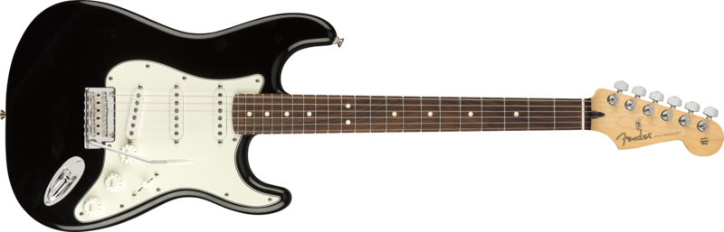
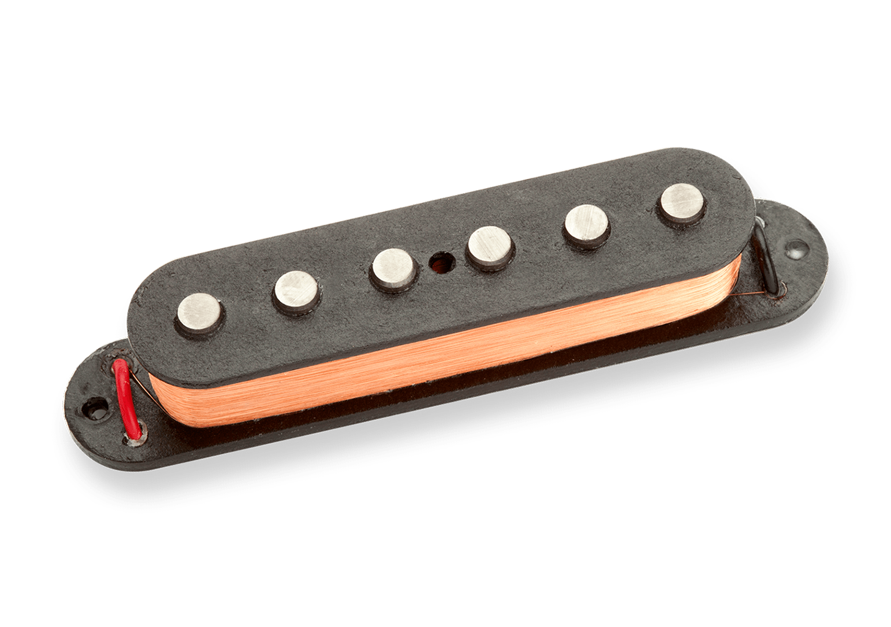
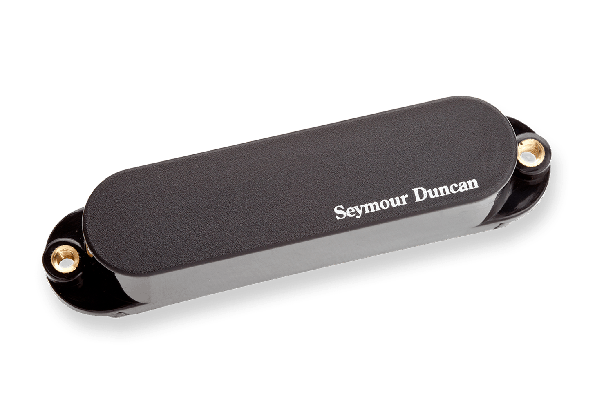

Fender Stratocaster
Gibson Les Paul
Fender Stratocaster

Blurb about fender Statocaster
 
something about single coil pickups
Neck Type
Pick Up
Common Music Genres
Musicians Who Use It
Bolt On
Single-Coil
Blues
Stevie Ray Vaughn
Rock and Roll
Jimi Hendrix
Which is your Favorite?
Fender Stratocaster
Gibson Les Paul
What is your favorite music genre?